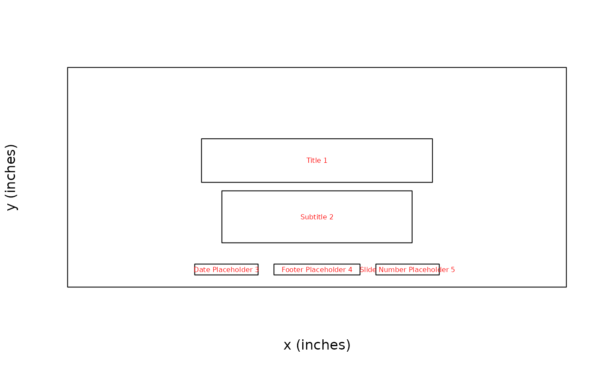
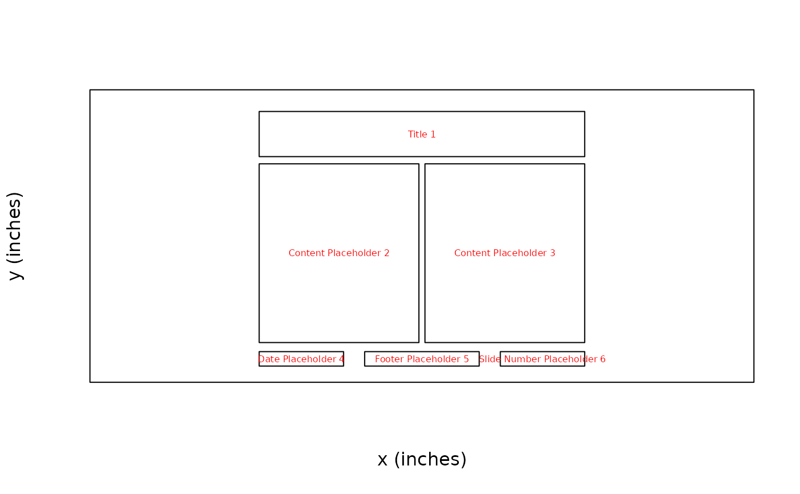

Plot slide layout properties into corresponding placeholders.
This can be useful to help visualize placeholders locations and identifiers.
All information in the plot stems from the layout_properties() output.
See Details section for more info.
Usage
plot_layout_properties(
x,
layout = NULL,
master = NULL,
slide_idx = NULL,
labels = TRUE,
title = TRUE,
type = TRUE,
id = TRUE,
cex = c(labels = 0.5, type = 0.5, id = 0.5),
legend = FALSE
)Arguments
- x
an
rpptxobject- layout
slide layout name or numeric index (row index from
layout_summary(). IfNULL(default), it plots the current slide's layout or the default layout (if set and there are not slides yet).- master
master layout name where
layoutis located. Can be omitted if layout is unambiguous.- slide_idx
Numeric slide index (default
NULL) to specify which slide’s layout should be plotted.- labels
if
TRUE(default), adds placeholder labels (centered in red).- title
if
TRUE(default), adds a title with the layout and master name (latter in square brackets) at the top.- type
if
TRUE(default), adds the placeholder type and its index (in square brackets) in the upper left corner (in blue).- id
if
TRUE(default), adds the placeholder's uniqueid(see columnidfromlayout_properties()) in the upper right corner (in green).- cex
List or vector to specify font size for
labels,type, andid. Default isc(labels = .5, type = .5, id = .5). Seegraphics::text()for details on howcexworks. Matching by position and partial name matching is supported. A single numeric value will apply to all three parameters.- legend
Add a legend to the plot (default
FALSE).
Details
The plot contains all relevant information to reference a placeholder via the ph_location_*
function family:
label: ph label (red, center) to be used inph_location_label(). NB: The label can be assigned by the user in PowerPoint.type[idx]: ph type + type index in brackets (blue, upper left) to be used inph_location_type(). NB: The index is consecutive and is sorted by ph position (top -> bottom, left -> right).id: ph id (green, upper right) to be used inph_location_id()(forthcoming). NB: The id is set by PowerPoint automatically and lack a meaningful order.
See also
Other functions for reading presentation information:
annotate_base(),
color_scheme(),
doc_properties(),
layout_properties(),
layout_summary(),
length.rpptx(),
slide_size(),
slide_summary()
Examples
x <- read_pptx()
# select layout explicitly
plot_layout_properties(x = x, layout = "Title Slide", master = "Office Theme")

plot_layout_properties(x = x, layout = "Title Slide") # no master needed if layout name unique
plot_layout_properties(x = x, layout = 1) # use layout index instead of name
# plot default layout if one is set
x <- layout_default(x, "Title and Content")
plot_layout_properties(x)
#> ℹ Showing default layout: "Title and Content"

# plot current slide's layout (default if no layout is passed)
x <- add_slide(x, "Title Slide")
plot_layout_properties(x)
#> ℹ Showing current slide's layout: "Title Slide"
 # specify which slide's layout to plot by index
plot_layout_properties(x, slide_idx = 1)
#> ℹ Showing layout of slide 1: "Title Slide"
# change appearance: what to show, font size, legend etc.
plot_layout_properties(
x,
layout = "Two Content",
title = FALSE,
type = FALSE,
id = FALSE
)
# specify which slide's layout to plot by index
plot_layout_properties(x, slide_idx = 1)
#> ℹ Showing layout of slide 1: "Title Slide"
# change appearance: what to show, font size, legend etc.
plot_layout_properties(
x,
layout = "Two Content",
title = FALSE,
type = FALSE,
id = FALSE
)
 plot_layout_properties(x, layout = 4, cex = c(labels = .8, id = .7, type = .7))
plot_layout_properties(x, layout = 4, cex = c(labels = .8, id = .7, type = .7))
 plot_layout_properties(x, 1, legend = TRUE)
plot_layout_properties(x, 1, legend = TRUE)